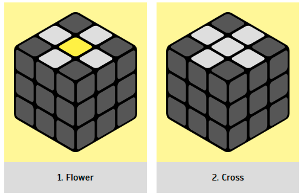

Stage 1. The correct cross
We divide the assembly of the correct cross into two steps: the first step is the “flower”,
which
then turns into a correct cross in step 2.
|  |
Flower
Our goal is to assemble a flower in which the center is yellow and the petals
are
white (Fig. 1). During assembly, hold the cube with the yellow center facing up. When the flower
is
ready, we will replace the yellow center with a white one to transform it into a correct cross.
(Fig. 2)
|